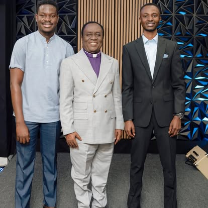

Building men of faith, integrity, and godly character — for the home, the church, and the world.
Who We Are
The Men's Ministry at DOXA Sanctuary is committed to raising men who are strong in faith, grounded in Scripture, and faithful in every area of life. We believe the strength of the family, the church, and the community is directly tied to the spiritual health of its men. Here, you will find brothers who sharpen you, challenge you, and stand with you.
What We Do
Every gathering is intentional — designed to strengthen men in every area of life.
Authentic relationships built on trust, accountability, and a shared commitment to walking with God.
Intentional discipleship that produces men who know the Word, obey it, and live by it every day.
Practical teaching that equips men to lead their homes with wisdom, love, and godly authority.
Men who are active in the church and community — serving, giving, and making a difference.
Open to All Men
This is not a ministry for perfect men — it is a ministry for real men who want to grow. Whether you are married or single, young or seasoned, a new believer or a long-time Christian, the Men's Ministry at DOXA Sanctuary has a place for you.
Through fellowship, accountability, practical teaching, and time in the Word, we build men who lead their homes with wisdom, serve their church with humility, and walk in the integrity that God requires. Every man who joins this ministry becomes part of a brotherhood that does life together.
Join the Brotherhood
What We Stand For
Three pillars that define the kind of men we are building at DOXA Sanctuary.
Men of their word. Men who do what is right when no one is watching. Men whose private life matches their public witness.
Men who pray, who trust God in every season, and who lead their families and communities from a place of deep spiritual conviction.
Men who show up — for their families, their church, and their communities. Men who understand that leadership is servanthood.
Leadership
Presiding Elder Aboagye leads the Men's Ministry at DOXA Sanctuary with strength, wisdom, and a father's heart. He understands what it means to be a man of God in today's world and is deeply committed to raising up men who are grounded in Scripture, faithful to their families, and bold in their faith. Under his leadership, the Men's Ministry has become a place of genuine transformation and brotherhood.
FAQs
Any man is welcome — regardless of age, background, or where you are in your faith journey. Whether you have been a Christian for decades or just walked into church for the first time, there is a place for you here.
We gather regularly for fellowship, Bible study, and special events. Contact us or fill out the form below to get the current meeting schedule and stay updated on upcoming events.
Absolutely. This ministry is not about being religious — it is about becoming the man God created you to be. We welcome men at every stage of their journey and meet you exactly where you are.
Get Connected
Fill out our connect form and our team will personally reach out to welcome you into the brotherhood.
Join the Brotherhood